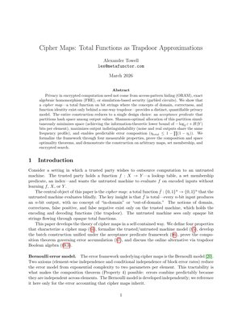
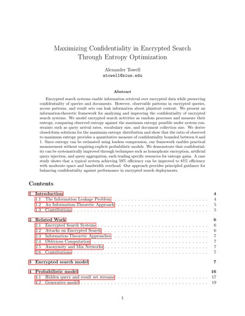
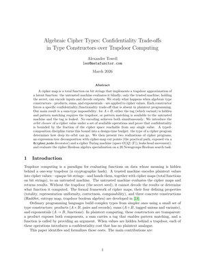

A theoretical framework for reasoning about computation with controlled approximation, distinguishing between latent values (true mathematical objects) and observed values (what computations produce).
Raw Papers
Auto-generated list of all papers from /static/latex/
59
Papers
0
Preprints
13
Top Rated
Search & Filter
Showing 59 of 59 papers
A framework where privacy emerges from uniform observable distributions, establishing that uniformity equals privacy through the uniform encoding construction.
Bridging PIR theory and practice through Bernoulli types, introducing tuple encoding for hiding Boolean AND correlations in conjunctive queries.
Analysis of how regular type axioms (reflexivity, symmetry, transitivity) behave under noisy observation, with applications to distributed systems and fault-tolerant computing.
Statistical foundations for Bernoulli types with empirical validation, introducing entropy maps and the Order-Rank-Entropy trinity.
A novel approach to approximate membership testing achieving constant query time with exact control over false positive rates, requiring only 2 hash operations regardless of error rate.
Through a single-user case study of 449 ChatGPT conversations, we introduce a cognitive MRI applying network analysis to reveal thought topology hidden in linear conversation logs. We construct semantic similarity networks with user-weighted embeddings to identify knowledge communities and bridge conversations that enable cross-domain flow. Our analysis reveals heterogeneous topology: theoretical domains exhibit hub-and-spoke structures while practical domains show tree-like hierarchies. We identify three distinct bridge types that facilitate knowledge integration across communities.
We present Infinigram, a corpus-based language model that uses suffix arrays for variable-length n-gram pattern matching. Unlike neural language models that require expensive training and fine-tuning, Infinigram provides instant training—the corpus is the model. Given a context, Infinigram finds the longest matching suffix in the training corpus and estimates next-token probabilities from observed continuations. This approach offers O(m log n) query time, complete explainability since every prediction traces to specific corpus evidence, and the ability to ground LLM outputs through probability mixing without retraining. We introduce a theoretical framework that views inductive biases as projections—transformations applied to queries or training data that enable generalization.
This technical report introduces the maskedcauses R package for maximum likelihood estimation in series systems with masked component cause of failure data. The package provides a unified framework for exponential and Weibull series systems, implementing log-likelihood functions, score vectors, and Hessian matrices under specific masking conditions (C1, C2, C3). We describe the mathematical foundation, software architecture, and integration with the broader likelihood.model ecosystem. The package enables practitioners to perform parameter estimation, construct confidence intervals, and conduct hypothesis tests for series system reliability problems where component failure causes are only partially observable.
We develop likelihood-based inference methods for series systems with masked failure data when the traditional conditions governing candidate set formation are relaxed. While existing methods require that masking be non-informative (Condition C2) and parameter-independent (Condition C3), practical d...
This technical report provides a rigorous specification of Monte Carlo Tree Search (MCTS) applied to Large Language Model (LLM) reasoning. We present formal definitions of the search tree structure, the four phases of MCTS (Selection, Expansion, Simulation, Backpropagation), and their adaptation for step-by-step reasoning with language models. Key design choices—including tree-building rollouts and terminal-only evaluation—are explicitly documented and justified. The goal is to establish a canonical reference specification that authentically captures the MCTS algorithm while adapting it for the unique characteristics of LLM-based reasoning tasks.

We present cipher maps, a comprehensive theoretical framework unifying oblivious function approximation, algebraic cipher types, and Bernoulli data models. Building on the mathematical foundations of cipher functors that lift monoids into cipher monoids, we develop oblivious Bernoulli maps that prov...
Problem: Traditional encrypted search systems face a fundamental tension: deterministic schemes leak access patterns enabling inference attacks, while probabilistic structures like Bloom filters provide space efficiency but fail to hide what is being queried.


A cipher map is a total function on bit strings implementing a trapdoor approximation of a latent function: the untrusted machine evaluates it blindly; only the trusted machine, holding the secret, can encode inputs and decode outputs. We develop a quantitative confidentiality theory for cipher map systems. The central measure is the entropy ratio e = H/H*, a normalized form of Shannon leakage from the Quantitative Information Flow literature. The representation-uniformity parameter delta controls the ratio via the Fannes-Audenaert continuity inequality, reducing confidentiality engineering to the concrete problem of minimizing delta. We analyze noise injection, multiple representations, and encoding granularity as three levers, prove a compositional leakage theorem, and validate experimentally on 20 Newsgroups encrypted Boolean search.
We present DagShell, a virtual POSIX-compliant filesystem implemented as a content-addressable directed acyclic graph (DAG). Unlike traditional filesystems that mutate data in place, DagShell treats all filesystem objects as immutable nodes identified by SHA256 content hashes, similar to Git’s objec...
We present JSONL Algebra (ja), a command-line tool and interactive REPL that applies relational algebra operations to semi-structured JSONL (JSON Lines) data. Unlike traditional database systems that require rigid schemas, ja embraces the flexibility of JSON while providing the expressive power of r...

We present algebraic cipher types, a functorial framework that lifts monoids and other algebraic structures into cryptographically secure representations while preserving their computational properties. Our cipher functor cA provides a systematic construction that maps a monoid (S,∗,e) to a cipher m...
We present DreamLog, a neural-symbolic system that integrates logic programming with large language models (LLMs) through a biologically-inspired architecture featuring wake-sleep cycles, compression-based learning, and recursive knowledge generation. DreamLog addresses the fundamental challenge of ...
Set of functions/methods for operating on, sampling from, etc. distributions.
We present Algebraic Hashing, a header-only C++20 library that enables systematic composition of hash functions through XOR operations. The library explores algebraic properties of hash function composition, providing practical implementations with compile-time composition via template metaprogrammi...
We define an algebra over maximum likelihood estimators by defining a set of operators that are closed over maximum likelhood estimators in addition to various other informative functions.
We present apertures, a coordination mechanism for distributed computation based on partial evaluation with explicit holes. Apertures (denoted ?variable) represent unknown expressions that enable pausable and resumable evaluation across multiple parties. Unlike security-focused approaches, we make n...
We analyze a theoretical perfect hash function that has three desirable properties: (1) it is a cryptographic hash function; (2) its in-place encoding obtains the theoretical lower-bound for the expected space complexity; and (3) its in-place encoding is a random bit string with maximum entropy.
Set of functions/methods for operating on, sampling from, estimating, etc. distributions paramaterized by dynamic failure rates that may be correlated with any set of predictors or covariates.
hypothesize is an R package that provides a simple API for hypothesis testing. It is designed to be easy to use, and to provide a consistent interface for hypothesis testing. It is built on top of the likelihood.model package, which provides a consistent interface for likelihood models.
Let's you construct differentiable expressions using auto differentiation.
Facilitates building likelihood models. It defines a number of generic methods for working with likelihoods, and a few functions that are strictly functions of these generic methods. It is designed to interoperate well with the algebraic.mle R package. It also comes with a likelihood contributions model, a likelihood model that is composed of multiple likelihood contributions assuming i.i.d. data.
We present maph (Map based on Perfect Hash), a high-performance key-value storage system that achieves sub-microsecond latency through a novel combination of memory-mapped I/O, approximate perfect hashing, and lock-free atomic operations. Unlike traditional key-value stores that suffer from kernel/u...
We define a set of functions for solving common MLE problems.
We present PFC (Prefix-Free Codecs), a header-only C++20 library that achieves full-featured data compression without marshaling overhead through a novel combination of prefix-free codes and generic programming principles. The library implements a zero-copy invariant: in-memory representation equals...
We present Xtk (Expression Toolkit), a powerful and extensible system for symbolic expression manipulation through rule-based term rewriting. Xtk provides a simple yet expressive framework for pattern matching, expression transformation, and symbolic computation. The system employs an Abstract Syntax Tree (AST) representation using nested Python lists, enabling intuitive expression construction while maintaining formal rigor. We demonstrate that Xtk’s rule-based approach is Turing-complete and show its applicability to diverse domains including symbolic differentiation, algebraic simplification, theorem proving via tree search algorithms, and expression optimization. The toolkit includes an extensive library of predefined mathematical rules spanning calculus, algebra, trigonometry, and logic, along with an interactive REPL for exploratory computation. We present the theoretical foundations of the system, describe its implementation architecture, analyze its computational complexity, and provide comprehensive examples demonstrating its practical applications.
This paper presents a novel approach to preventing ransomware damages through in-operation off-site backup systems designed to achieve an exceptionally low false-negative miss-detection rate of 10⁻⁸.
We develop a distribution-agnostic likelihood framework for estimating component reliability from series system data with masked failure causes. Under three sufficient conditions on the masking mechanism (C1: candidate set contains the true cause, C2: symmetric masking, C3: masking independent of lifetime parameters), the unknown masking distribution is eliminated from the likelihood. The resulting likelihood is expressed entirely in terms of component hazard and reliability functions, covering exact, right-censored, left-censored, and interval-censored observations. We establish formal identifiability conditions based on the diagnostic separability of candidate sets and provide instantiations for five common parametric families.
How do you store infinity in 256 bits? This paper explores the fundamental deception at the heart of computational cryptography: using finite information to simulate infinite randomness. We prove why true random oracles are impossible, then show how lazy evaluation creates a beautiful lie—a finite a...
We develop a probabilistic framework for quantifying the confidentiality of encrypted search systems based on the sampling distribution of a confidentiality statistic. Using the Bootstrap method with normal approximation, we efficiently estimate the risk of confidentiality breach, enabling proactive countermeasures. Our analysis shows how entropy of the query distribution relates to the adversary's expected accuracy, providing theoretical grounding for resilience engineering approaches to encrypted search security.
This paper investigates maximum likelihood techniques to estimate component reliability from masked failure data in series systems. A likelihood model accounts for right-censoring and candidate sets indicative of masked failure causes. Extensive simulation studies assess the accuracy and precision o...
We present Hash-Based Oblivious Sets (HBOS), a practical framework for privacy-preserving set operations that combines cryptographic hash functions with probabilistic data structures. Unlike traditional approaches using fully homomorphic encryption or secure multi-party computation, HBOS achieves microsecond-scale performance by embracing approximate operations with explicitly managed error rates. HBOS provides oblivious representation through one-way hash transformations—the underlying data cannot be recovered from hash values. Operations return Bernoulli Booleans: plaintext approximate results with explicit error rates. This layered model trades full obliviousness of query results for practical efficiency, making it suitable for applications where query patterns are not sensitive or results are shared.
We present a time series analysis of confidentiality degradation in encrypted search systems subject to known-plaintext attacks. By modeling the adversary's accuracy as a time-dependent confidentiality measure, we develop forecasting models based on ARIMA and dynamic regression techniques. Our analy...
This paper applies an approach of resilience engineering in studying how effective encrypted searches will be. One of the concerns on encrypted searches is frequency attacks. In frequency attacks, adversaries guess the meaning of the encrypted words by observing a large number of encrypted words in search queries and mapping the encrypted words to guessed plain text words using their known histogram. Thus, it is important for defenders to know how many encrypted words adversaries need to observe before they correctly guess the encrypted words. However, doing so takes long time for defenders because of the large volume of the encrypted words involved. We developed and evaluated Moving Average Bootstrap (MAB) method for estimating the number of encrypted words (N*) an adversary needs to observe before an adversary correctly guesses a certain percentage of the observed words with a certain confidence. Our experiments indicate that MAB method lets defenders to estimate N* using only 5% of the time, compared to the cases without MAB. Because of the significant reduction in the required time for estimating N*, MAB will contribute to the safety in encrypted searches.
Encrypted Search, a technique for securely searching documents on untrusted systems. The author designs and compares several secure index types to determine their performance in terms of time complexity, space complexity, and retrieval accuracy. The study also examines the risk to confidentiality posed by storing frequency and proximity information and suggests ways to mitigate the risk. Additionally, the author investigates the impact of false positives and secure index poisoning on performance and confidentiality. Finally, the thesis explores techniques to protect against adversaries with access to encrypted query histories, such as query obfuscation.